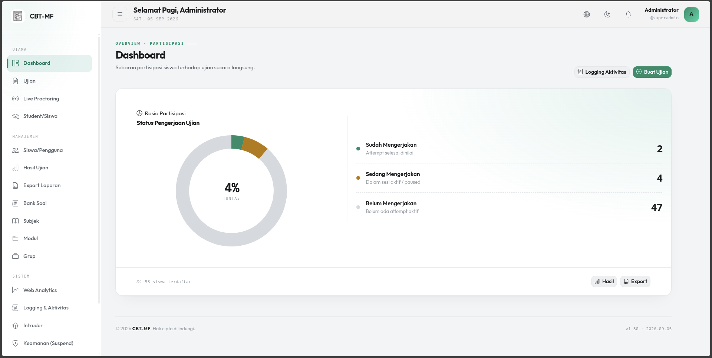
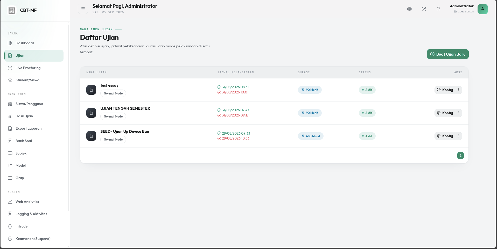
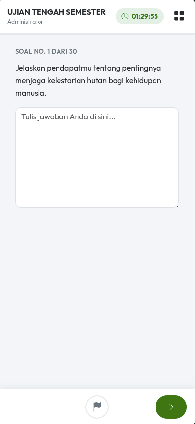
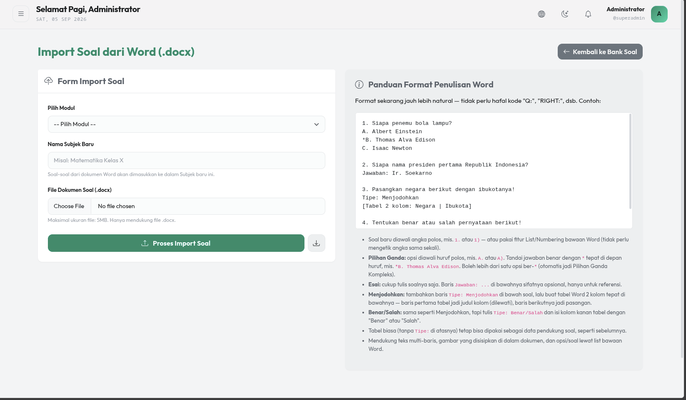
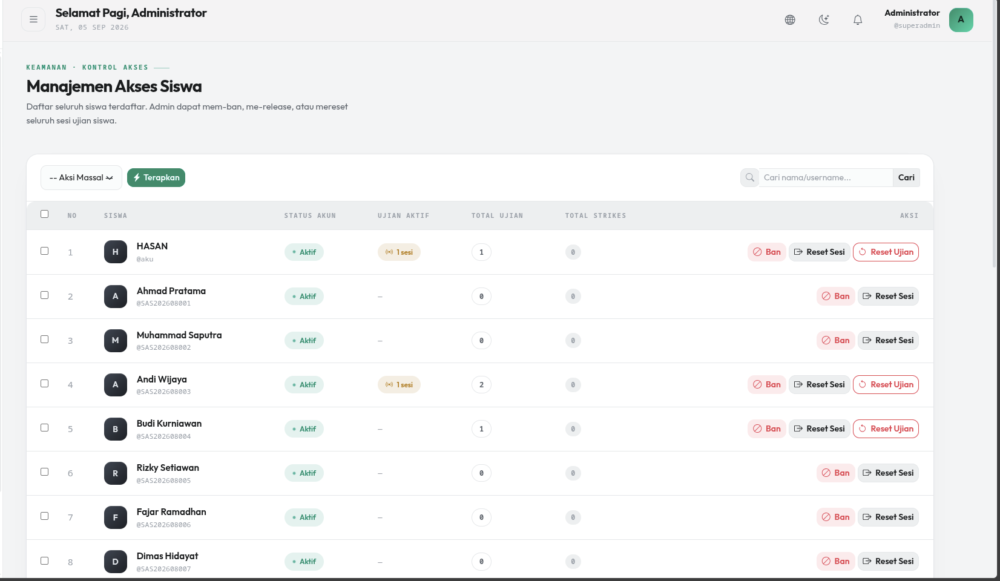
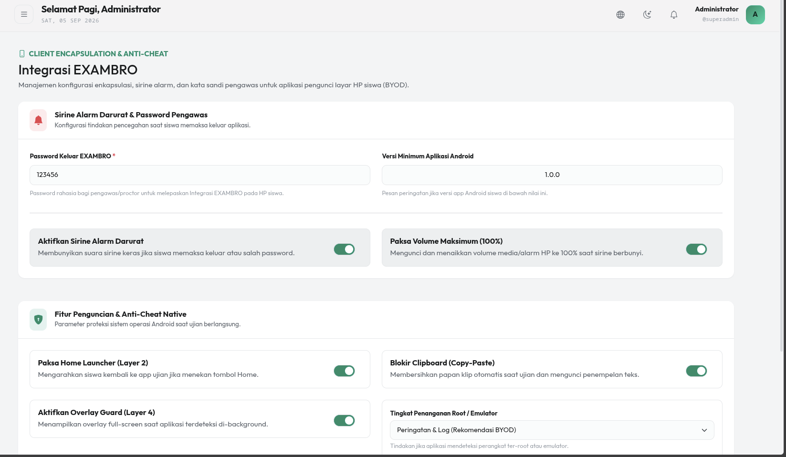
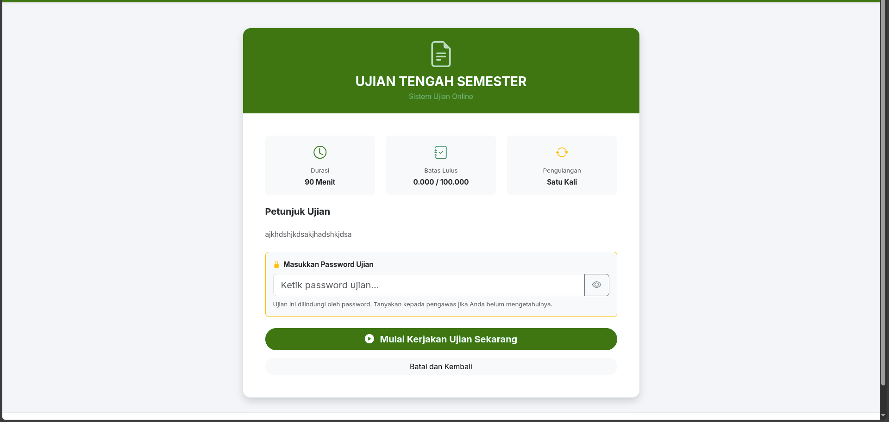

Bank
soal enam tipePilihan ganda, pilihan ganda kompleks, esai, menjodohkan, benar atau salah, dan mengurutkan.
Open source untuk pendidikan Indonesia
CBT-MF menggabungkan CodeIgniter 4, Docker, live proctoring, dan EXAMBRO Android dalam satu platform ujian.

CBT-MF adalah aplikasi ujian berbasis komputer untuk sekolah dan madrasah. Seluruh layanan berjalan di dalam Docker agar pemasangan dan operasionalnya konsisten.
Komunikasi real-time dit
angani daemon WebSocket terpisah, sehingga ratusan peserta serentak tidak menghabiskan worker PHP-FPM. Halaman soal juga dapat dibekukan menjadi berkas statis agar tahan terhadap lonjakan akses pada menit pertama ujian.Fitur dirancang untuk alur kerja sekolah, mulai dari penyusunan soal hingga pengawasan dan analisis hasil.
Pilihan ganda, pilihan ganda kompleks, esai, menjodohkan, benar atau salah, dan mengurutkan.
Soal dari berkas .docx dapat memakai pen
Pengawas dapat memant
au peserta, menambah waktu, mengeluarkan, atau memblokir sesi secara real-time.Aplikasi pengunci layar BYOD dengan overlay guard, blokir clipboard, sirine, dan deteksi root atau emulator.
Peringatan otomatis diberikan saat peserta keluar dari fullscreen atau berpindah tab browser.
Batas peserta serentak dan pembatasan login per-IP dirancang agar tetap ramah untuk jaringan sekolah di balik CGNAT.
Aktivitas pengguna
, status online real-time, dan laporan ujian tersedia untuk ditinjau atau diekspor.Antarmuka mencakup panel administrator, kontrol pengawas, halaman peserta desktop, dan pengalaman ujian di ponsel.




dan sesi siswa di CBT-MF" loading="lazy" decoding="async">

Installer interaktif menyiapkan konfigurasi, container, dependensi, migrasi database, permission, dan akun administrator pertama.
Prasyaratwww-data)
git clone https://github.com/rozendev/CBT-MF.git
cd CBT-MF
sudo bash scripts/cbt.sh installInstaller menanyakan database, prefix container
Konfigurasi ditulis ke berkas
| Layanan | Alamat | Keterangan |
|---|---|---|
| Aplikasi Ngin | http://localhost:8080 | Satu-satunya port yang terekspos ke jaringan |
| WebSocket | 127.0.0.1:8060 | Terikat ke localhost dan diproksi lewat /ws/ |
| MariaDB | Internal | Hanya tersedia di jaringan Docker |
| Redis | Internal | >Hanya tersedia di jaringan Docker |
scripts/cbt.sh adalah pintu utama untuk mengoperasikan seluruh layanan CBT-MF.
sudo bash scripts/cbt.sh
sudo bash scripts/cbt.sh <grup> <perintah>dockerup, down, restart, logs, appshell, php, composershell, root, export, import, reset-passwordredisshell, flushbundlestatustd>dataimages, optimize, cache-clear, finalize, prune-kioskmigratestatus, rollbacktd>
tuneshow, setPerintah tingkat atas meliputi backup, log-
reset-install, test-k6, installcode>, dan helpcode>. Perintah yang berisiko merusak data meminta konfirmasi dengan mengetik ulang nama perintah.
Perintah harian
Setelah mengubah UI ujian: jalankan sudo bash scripts/cbt.sh bundle build agar EXAMBRO menerima bundle terbaru.
Nginx menjadi pintu masuk tunggal. PHP-FPM menangani aplikasi, daemon WebSocket menangani komunikasi real-time, dan Redis mengurangi beban penulisan MariaDB.
Komunikasi server ke klien tidak menahan worker PHP-FPM. ReactPHP mendengarkan Redis Pub/Sub dan
menyiarkan perintah pengawas.Jawaban peserta ditulis ke Redis selama uj
ian, lalu dipindahkan secara massal ke MariaDB pada akhir proses.Pembacaan soal tidak memerlukan kerja PHP atau kueri database untuk setiap permintaan peserta.
Nginx, PHP, WebSocket, cron, Cloudflared, MariaDB, dan Redis diorkestrasi melalui Docker Compose.
src/scripts/cbt.sh dan utilitas pendukungcbt-kiosk-app/docs/docker-compose.ymlDockerrailway.json>Dukungan deployment ke Railway Repository ini bersifat publik. Seluruh kredensial, token, dan rahasia wajib dibuat sendiri dan disimpan di konfigurasi lingkungan.
INTRUDER_TOKEN acak dan menyelaraskannya dengan halaman honeypot Nginx.
Isi DB_PASSWORD> dan MYSQL_ROOT_PASSWORD. Tidak tersedia password bawaan.
Isi KIOSK_APP_SECRET agar endpoint verifikasi
Setel
sudo bash scripts/cbt.sh docker status.
sudo bash scripts/cbt.sh docker logs.sudo bash scripts/cbt.sh docker restart.li>
Pastikan src/writable/, src/public/uploads/ dapat ditulis oleh grup web server. Gunakan permission 775777.
mkdir -p src/writable src/public/static src/public/uploads
sudo chown -R :33 src/writable src/public/static src/public/uploads
sudo chmod -R 775 src/writable src/public/static src/public/uploadsMariaDB menerapkan username dan password ketika volume pertama kali dibuat. Jika volume masih menyimpan kredensial lama, hapus volume lalu ulangi instalasi. Perintah ini menghapus seluruh data database.
docker compose down -v
sudo bash scripts/cbt.sh installKasus lain tersedia di Troubleshooting.md.
Laporkan bug, usulkan fitur, atau ajukan pull request melalui GitHub. Proyek ini aktif dikembangkan.
Untuk perubahan kode, buat branch dari
sudo bash scripts/cbt.sh app shell
composer test
vendor/bin/phpunit -c phpunit.throttling.xml.distPertanyaan dan laporan masalah dapat dikirim melalui GitHub Issues CBT-MF. Sertakan keluaran scripts/cbt.sh docker status dan potongan log yang relevan.
CBT-MF dilisensikan dengan GNU Affero General Public License v3.0 atau versi setelahnya (AGPL-3.0-or-later).
Menjalankan CBT-M
F tanpa perubahan untuk ujian sekolah tidak menimbulkan kewajiban tambahan tersebut. Ringkasan ini bukan nasihat hukum. Baca teks resmi pada berkas LICENSE.